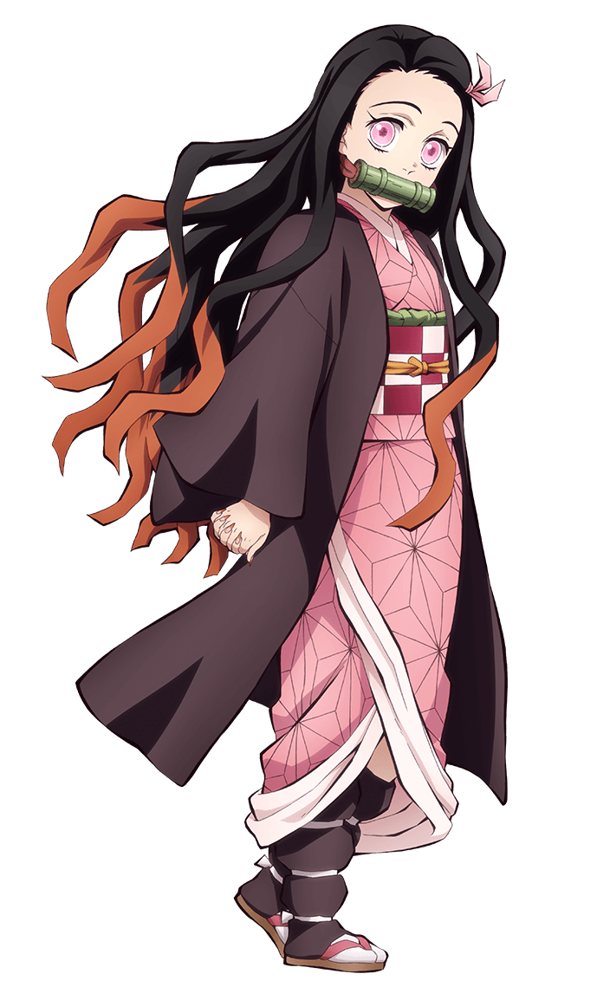
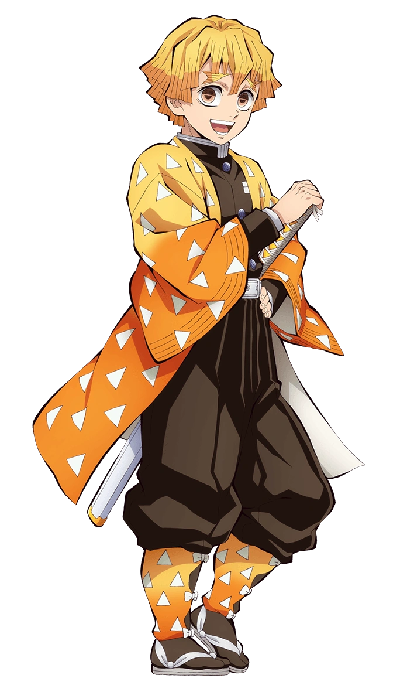
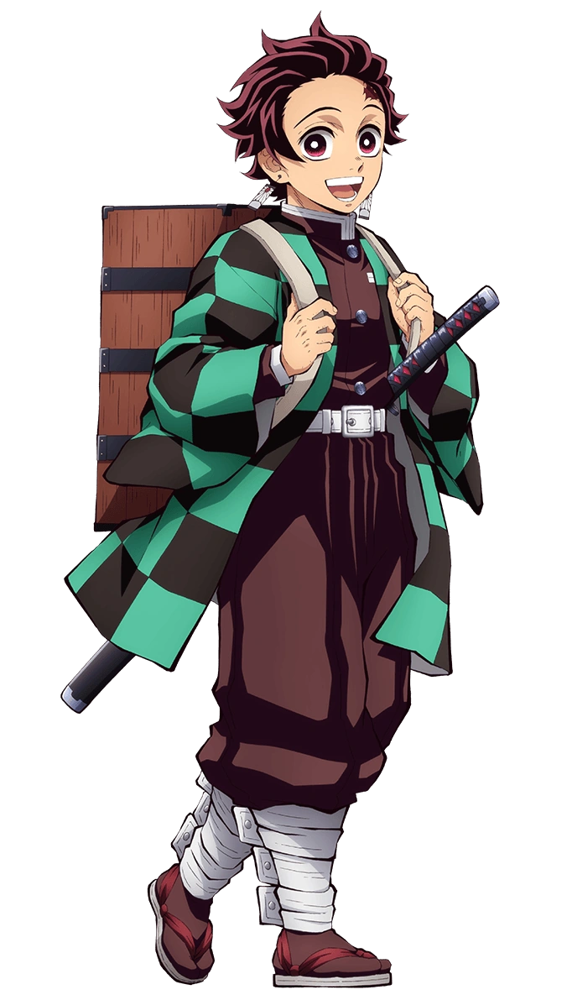

Nezuko Kamado is a demon, but she does not eat people. Instead, she sees them as her younger siblings and protects them.

Zenitsu Agatsuma is a demon slayer who uses thunder breathing.

Tanjiro Kamado is a demon slayer who is learning to use all breathing techniques.

Inosuke Hashibira is a demon slayer who uses beast breathing.